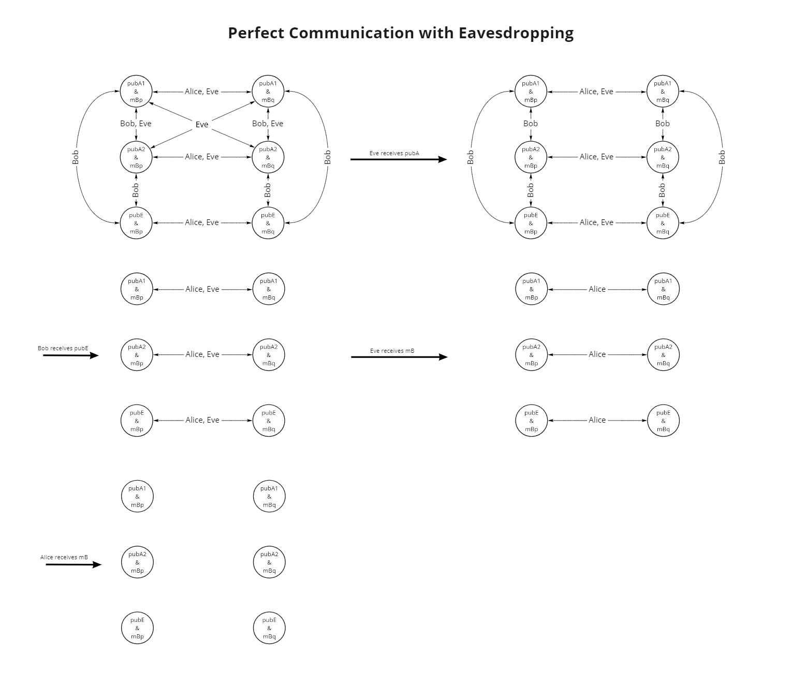

In terms of epistemic logic, we now see certain nuances emerge. What is of special interest the false belief Alice and Bob have concerning whose public key they receive. Again, we can consider the simplified case of Alice sending one of two possible public keys, and Bob sending on of two possible messages. Again, the logic derived here can be extended by induction. Note that Eve's public key is also modelled, but only as one possible key. However, this again could be expanded by induction to arbitrarily many public keys.
Considering Fig. ![[*]](crossref.png) from left-to-right, and then downward:
from left-to-right, and then downward:
- In the initial state, Bob can distinguish between no public keys and thus must consider all key nodes simultaneously possible through accessibility relations. Bob does know the content of his own prospective message however, and so there are no lateral relations for Bob between possible messages. While Alice cannot distinguish between possible messages of Bob, she does know the difference between her own possible keys and Eve's key and therefore has no accessibility relations between these nodes. Eve can only between her own public key and Alice's public key at this point, and must accept all other possibilities at this point in time.
- After Eve receives Alice's public key she now can drop the accessibility relations between Alice's possible keys.
- Once Bob receives Eve's public key (thinking that it is Alice's) all key world are mutually exclusive for Bob as well.
- Upon receiving and decrypting his message, Eve now may distriguish all possible message nodes.
- Once Alice finally receives Bob's message (encrypted with Eve's key), she can decrypt it with what she thinks is Bob's public key (though it is Eve's) and finally, everyone may distinguish all possible states and the information is shared.
The obvious issue with this situation is that Alice and Bob may very well wish to keep there information private.
Figure:
Perfect communication with Eavesdropping diagram
| 
|